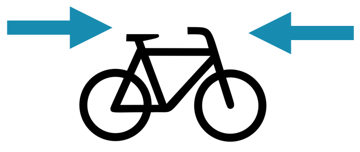

Technische eigenschappen van de fiets zoals motorkoppel en controlestrategie beïnvloeden de typische snelheid van de fiets. Bij een groot deel van de elektrische fietsen is de snelheid waarnaar de de fiets neigt zelfs onafhankelijk van de gebruikersinput aan de pedalen. Om dit complex gedrag van de fiets samen te vatten in één getal is ontwerpsnelheid gedefiniëerd. Om een idee te hebben bij welke snelheid welke vermogens nodig zijn is deze speed and power calculator handig.
De ontwerpsnelheid is de snelheid waarmee de fietser in genormaliseerde omstandigheden rijdt, assistentieniveau maximaal, meetrappen aan 100 Watt. Bij pedelecs komt dit vaak overeen met de afschakelsnelheid (25 km/u) als de motor krachtig genoeg is. Bij speed-pedelecs is de ontwerpsnelheid een zeer onderscheidende factor.
Ook voor niet-elektrische fietsen kan deze definitie gebruikt worden om aan te duiden hoe efficiënt een fiets is.
Bepalen van de ontwerpsnelheid kan op verschillende manieren gebeuren. Binnen het kader van TGVelo zijn drie mogelijke procedures uitgewerkt.
De eerste methode heeft als voordeel dan enkel een snelheidmeter en vermogensmeting aan de pedalen noodzakelijk is. De herhaalbaarheid is echter beperkt als dit buiten op de weg wordt uitgevoerd vanwege de grote invloed van wind en type wegdek. De andere twee methodes vermijden externe invloeden door in een labo te testen. Je hebt er wel testapparatuur voor nodig om het motorvermogen van de fiets aan het het wiel te meten. In volgende paragrafen worden de drie methoden in detail uitgelegd.
Installeer een snelheidmeter op de fiets die kan meten tot op +/- 1 km/u nauwkeurig. Installeer een vermogenmeter (vermogen van de mens aan de pedalen) die kan meten tot op +/- 5 W nauwkeurig. In de meest ideale situatie word de snelheid en het vermogen gelogged op een apparaat zodat het achteraf op de computer kan geanalyseerd worden.
Zoek een testsite met volgende eigenschappen:
De test kan dan worden uitgevoerd door een persoon met volgende eigenschappen:
De test zelf wordt uitgevoerd met de fiets in maximale assistentie. Rij twee minuten rechtdoor met een trapvermogen van 100 W. Rij daarna twee minuten in de tegenovergestelde richting met een trapvermogen van 100 W. De constante snelheid die wordt gehaald is de ontwerpsnelheid in die richting. Het gemiddelde van de twee snelheden is dan de ontwerpsnelheid van de fiets.
Voor de berekening zijn verschillende gegevens nodig uit voorafgaande metingen:
Het theoretisch benodigde voormogen kan in functie van de snelheid berekend worden.
Pw(v) = (M * g * Cr + 0.5 * rho * CdA * v^2) * v
Dit is op een vlakke weg zonder wind. Met de gravitatieconstante g = 9.81 m/s^2, luchtdichtheid rho = 1.225 kg/m^3 en M het totale gewicht van fiets met volle belanding en rijder. Bij de functie van motorvermogen aan het wiel wordt 100 W toegevoegd min de verliezen door het kettingrendement. De grootste snelheid waarvoor Pm(v) + 100 = Pw(v) is de ontwerpsnelheid.
De formule voor het weerstandsvermogen in functie van de snelheid uit de vorige sectie kan gebruikt worden om een normale rit rechtdoor te simuleren op een testbank. Wanneer men dan op een testbank 100 W aan de pedalen aanlegt, de fiets in hoogste assistentie zet en de weerstand aan het wiel regelt in functie van de snelheid op basis van de formule, dan kan men heel snel te ontwerpsnelheid bepalen.